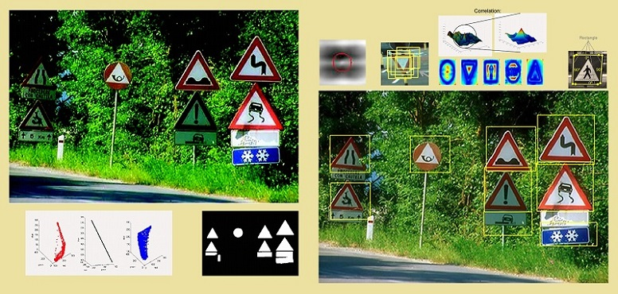

To put into practice the algorithms and techniques, the students will work on a concrete project along the course. The aim is to provide an applied knowledge of a broad variety of Computer Vision techniques applied to solve a real-world vision problem. The project goal is to detect specific objects in images, in our case traffic signals, using basic CV techniques such as linear and non-linear filtering segmentation, grouping, template matching, modeling, etc. The knowledge obtained can be used in a wide variety of applications, for instance, quality control, generic object detection, security applications, etc.
The goal of this project is to apply the basic concepts and techniques to build a system to detect specific objects. In this project we focus on Traffic Signs detection and recognition (TSDR) in images recorded by an on-board vehicle camera. This project is framed in the field of the computer-aided driver assistance, along with obstacle detection, pedestrian detection, parking assistance or lane departure warning, as well as a range of non-visual components like GPS-based vehicle positioning or intelligent route planning. For these reasons, TSDR represents a typical problem where Computer Vision techniques can be successfully applied to obtain automatic results in a real-world problem. The learning objectives for the students are the use of local image features, such as color, contours, etc., to implement a system able to solve the proposed problem. In this way, the students can experience with the problems of designing and evaluating the performance of an object detection system